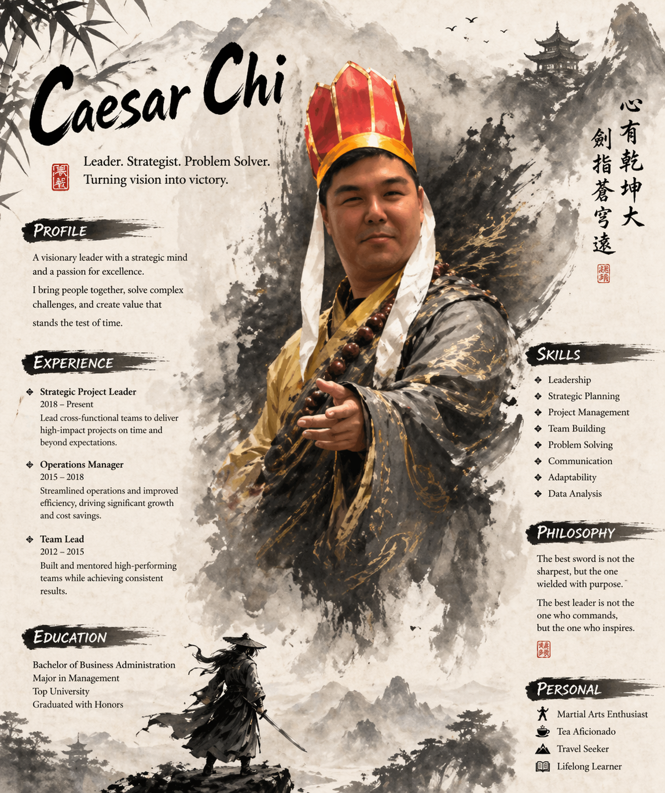
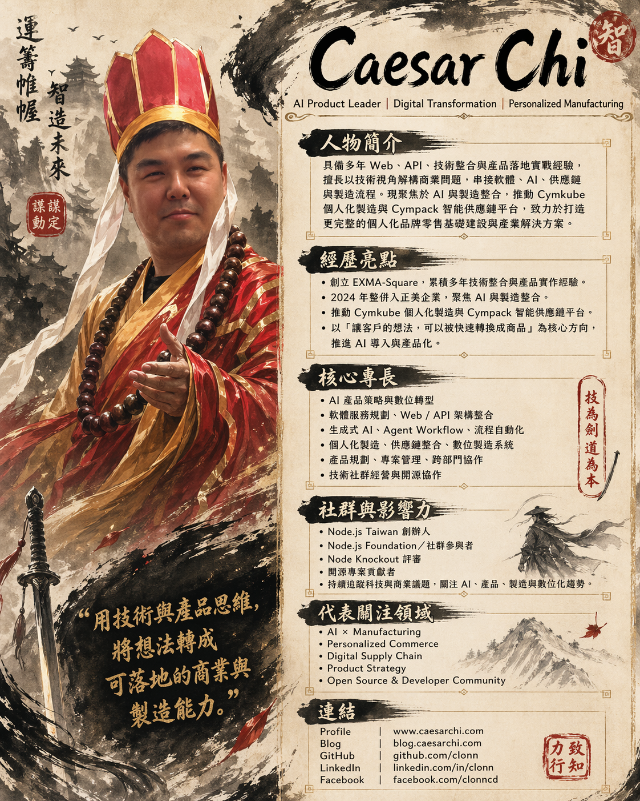

15
Caesar
Chi
戚務漢
§ 0 ·
智


致知
力行
力行
i.
策
ii.
工
iii.
群
iv.
造
智
戚氏
§ I ·
§ II ·
i
§ 01 · Cymkube
Cymkube
ii
§ 02 · Cympack
Cympack
§ III ·
2
1
∞
§ IV ·
-
2025
-
2025
-
2025
-
2025
-
2025
§ V ·
-
2025
-
2016
-
2023
-
2017
-
2019
-
2022
§ VI ·
npm install · slack-node
slack-node
331k/mo
245
§ VII ·
-
25
-
23
-
19
-
18
-
27
-
23